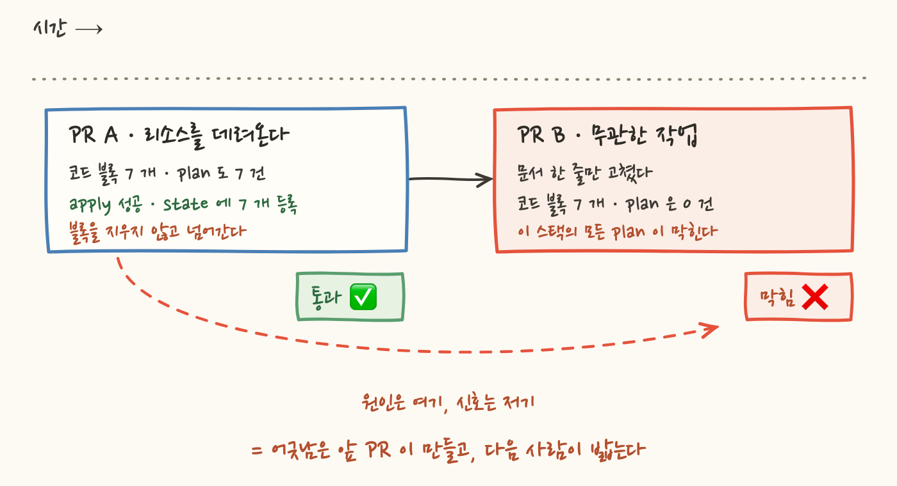
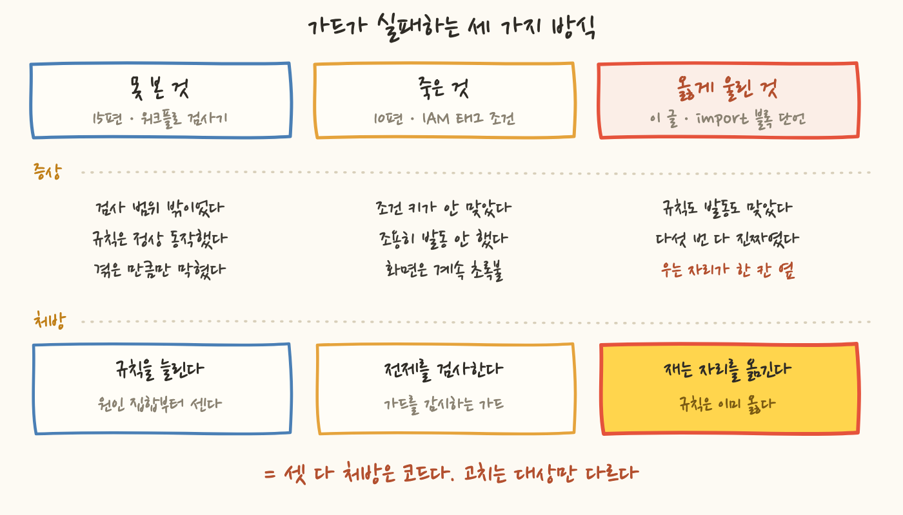

이미 돌고 있는 리소스를 Terraform 관리 아래로 데려올 때는 import 블록을 씁니다. "이 주소는 저 실물이다"라고 코드에 한 줄 적어두면, 다음 apply 가 그 실물을 state 에 등록해요. 한 번 등록되면 그 블록은 할 일이 끝납니다. 그 자리에서는 아무 일도 안 하니까, 죽은 문장처럼 보이죠.
그런데 지우지 않으면 그 스택의 다음 PR 이 막힙니다. 잘못한 그 PR 이 아니라요. 며칠 뒤에, 완전히 무관한 작업을 들고 온 다음 PR 이 막혀요. 제가 실제로 본 것 중 제일 억울한 사례는 문서 파일 하나만 고친 PR 이 로드밸런서도 버킷도 건드리지 않았는데 plan 단계에서 통째로 막힌 것이었습니다.
이 실수를 다섯 번 했어요. 그중 넷은 이사하던 이틀 안에 몰려 있었고요. 그리고 세 번째에 고친 것은 가드가 아니라 작업 지시서의 문장 한 줄이었습니다. 이 글은 그 문장이 무엇을 고쳤고 무엇을 못 고쳤는지에 대한 이야기예요.
가드 자체는 아주 단순합니다. 두 숫자를 대조해요.
이 가드가 왜 생겼는지부터 짚어야 뒤가 이해돼요. Terraform 은 import 를 plan JSON 에 actions: ["no-op"] 로 표시하고, 진짜 정보는 change.importing 이라는 옆자리에 담습니다. 그런데 파이프라인의 판정 로직 여섯 지점이 전부 no-op 을 "볼 것 없음"으로 건너뛰고 있었어요. 그래서 운영 중인 리소스가 state 로 들어오는 PR 이 PR 코멘트에 +0 ~0 -0 ±0 · 파괴적 변경 없음 으로 보였습니다. 머지해도 아무것도 안 옮겨지는 것처럼 보이는데, 실제로는 운영 리소스의 소유권이 옮겨오는 중이었죠. 11편의 "설정했다와 적용됐다는 다른 말이다"와 같은 가족입니다. 화면이 거짓말을 한 게 아니라, 화면이 그걸 보는 눈이 없었던 거예요.
여섯 지점을 통합하는 건 폭발 반경이 큰 작업이라 뒤로 미루고, 대신 비어 있는 창을 막는 단언 하나를 plan 워크플로에 끼웠습니다. 이게 전부예요.
여기서 이 가드의 좋은 성질 두 개를 먼저 인정하고 갈게요.
첫째, 평소에는 없는 것과 같습니다. import 블록이 0 개인 스택에서는 0 == 0 으로 무해하게 통과해요. 그리고 첫 import 블록이 들어오는 순간 자동으로 무장됩니다. 누가 켜주지 않아도요.
둘째, 어긋남의 원인이 사실상 하나뿐입니다. 이유는 Terraform 의 동작에 있어요. import 블록이 가리키는 주소가 이미 state 에 있으면 Terraform 은 그 블록을 에러 없이 건너뜁니다. plan 은 성공하고, 그 블록만 importing 에서 빠져요. 그러니 "코드 블록 수가 plan 의 import 건수보다 많다"는 부등식은 역할을 다한 블록이 남아 있다는 것과 사실상 같은 말입니다. 매번 우는 가드는 꺼지지만, 이 가드는 다섯 번 울고 다섯 번 다 진짜였어요.
이 두 번째 성질은 처음 쓸 때 "오탐이 구조적으로 안 난다"고 적어뒀는데, 15편을 쓴 뒤에 그 문장을 다시 보니 너무 셌어요. 15편에서 물어야 한다고 정한 질문이 "이 사고가 속한 클래스의 나머지는 무엇인가"였는데, 그걸 이 가드에 적용하면 반례가 하나 나옵니다.
grep 으로 import { 로 시작하는 줄을 셉니다. 즉 블록의 개수를 세요. 그런데 Terraform 은 import 블록에 for_each 를 붙일 수 있고, 그러면 블록 하나가 여러 건의 import 를 만듭니다. 이 저장소는 Terraform 1.10 을 쓰니 문법이 이미 열려 있어요.1 != 5 로 정상 작업이 실패합니다. 그러니까 이 가드가 무오탐인 근거는 구조가 아니라 이 저장소가 그 문법을 안 쓴다는 관례예요. 누군가 반복 편입을 for_each 로 쓰는 날, 이 가드는 옳은 PR 을 막습니다.
문제는 시점이에요. 이미 state 에 들어간 리소스는 다음 plan 에서 더 이상 "가져온다"로 잡히지 않습니다. 등록이 끝났으니까 당연하죠. 그래서 이런 순서가 만들어집니다.
어긋남을 만든 PR 은 그것을 만드는 순간에는 완벽하게 옳습니다. 그 시점에 두 숫자는 정확히 같아요. 어긋남은 apply 가 성공한 뒤에, 그러니까 그 PR 이 이미 머지되고 CI 가 끝난 뒤에 비로소 생깁니다. 그리고 그걸 처음 밟는 사람은 그 스택을 다음에 건드리는 사람이에요. 자기가 뭘 잘못했는지 알 방법이 없는 사람이요.
글 처음에 "죽은 문장처럼 보인다"고 썼는데, 정확히는 잠들어 있는 문장입니다. 이걸 알려준 건 이 가드가 아니라 훨씬 전의 다른 정리 작업이었어요.
알림 스택에 이미 state 에 들어간 구독의 import 블록이 남아 있었습니다. 지금은 건너뛰어지니 아무 일도 안 하죠. 그런데 누군가 콘솔에서 그 구독을 지우면 refresh 가 state 에서 그것을 잃고, 그 순간 잔여 블록이 되살아납니다. 이제는 실재하지 않는 대상을 가리키니 plan 이 통째로 실패해요. 그러면 plan 과 apply 와 드리프트 감시가 그 스택에서 전부 멈춥니다. 알림 경로가 끊어진 바로 그 순간에, 그것을 고칠 파이프라인도 함께 멈추는 거예요.
그러니 잔여 블록의 대가는 "다음 PR 이 불편해진다" 하나가 아닙니다. 실제로 청구된 것은 앞의 것이고, 구조적으로 열려 있는 것은 뒤의 것이에요.

가드를 넣은 날 오후에 벌써 처음 울었어요. 그리고 이사 이틀 동안 네 번 더 울렸습니다. 매번 다른 리소스 종류였고, 매번 잘못한 PR 이 아니라 다음 작업이 걸렸어요.
둘째 줄과 셋째 줄을 보면 숫자가 왜 저렇게 이상한지 알 수 있어요. 로드밸런서 블록 4 개가 남은 상태에서 DB 편입 PR 이 새 블록 3 개를 들고 오면, 코드에는 7 개인데 plan 은 3 건입니다. 그다음 버킷 PR 이 7 개를 들고 오면 코드 10 개에 plan 7 건이에요. 잔여 블록이 다음 PR 의 정상적인 숫자에 그대로 얹혀서 어긋남을 만듭니다. 그러니 화면의 숫자만 보면 "내가 쓴 블록 개수도 안 맞나?" 싶고, 실제로 첫 두 번은 로그를 뒤져서 원인을 찾았습니다.
가장 억울한 건 넷째 줄입니다. 그 PR 은 이사하면서 발견한 고아 리소스와 어긋남 목록을 문서에 정리한 것이 전부였어요. .tf 파일을 한 글자도 고치지 않았습니다. 그런데도 그 스택의 plan 이 실패했어요. 가드는 PR 의 diff 를 보는 게 아니라 그 스택의 현재 코드 전체를 보니까요.
마지막 줄은 성질이 달라요. 이번엔 잊지 않았습니다. apply 직후에 블록을 지우는 커밋을 만들어서 정리 PR 까지 올렸어요. 그런데 그 PR 이 머지되지 않고 닫혔습니다. 그래서 블록 14 개가 기본 브랜치에 그대로 남았고, 43 분 뒤 다른 리팩터 PR 이 그걸 밟았습니다.
커밋 그래프에서 확인해보면 그 정리 커밋은 지금도 자기 브랜치에만 남아 있어요. 기본 브랜치의 조상이 아닙니다. 일은 다 해놨는데 도착하지 않은 겁니다.
여기서 교훈 하나가 나와요. 정리를 다음 PR 로 미루면 그 PR 은 유실될 수 있습니다. 그리고 이건 "PR 관리를 잘하자"로 끝날 문제가 아니라 진짜 트레이드오프예요.
세 번째로 밟은 날, 커밋 본문에 이렇게 적었어요.
이 문장이 이 글에서 제일 중요한 관찰입니다. 부주의가 아니라 작업 흐름의 구조거든요. 이사 작업의 한 단계는 이렇게 생겼어요.
5 번에서 보상이 전부 지급됩니다. 운영 중인 실물이 이제 코드 아래로 들어왔고, plan 이 초록이고, 되돌릴 수 없는 것도 없어요. 이 순간 머릿속에 남는 문장은 "다음 리소스"입니다. 6 번은 이미 끝난 일의 뒤처리고, 아무것도 만들어내지 않아요.
그리고 결정적인 게 하나 더 있어요. 6 번을 건너뛰어도 그 순간에는 아무 일도 안 일어납니다. 지금 열려 있는 PR 은 이미 통과했고, CI 는 초록이고, 화면 어디에도 빨간 줄이 없어요. 처벌이 다음 PR 로 미뤄져 있으니, 그 자리에서는 잘못한 신호가 전혀 없습니다. 잊을 조건이 완벽하게 갖춰진 셈이죠.
이게 저 혼자만의 게으름이 아니라는 근거가 하나 있어요. 이 규칙은 이사 훨씬 전부터 말로는 존재했습니다. 파이프라인 설계를 협의하면서 이미 이렇게 적혀 있었어요. "import 블록은 apply 성공 직후 지운다. 사람 기억에 맡기면 남으므로 기계로 강제한다." 알고 있었고, 문장으로 남겨뒀고, 기계로 강제하자고 스스로 적어놓고도 다섯 번 잊었습니다.
세 번 밟은 뒤에 무엇을 고쳤나. 가드가 아니라 작업 지시서였습니다. 정확히는 이 저장소의 "서비스 편입" 절차서인데, 세 단계에 걸쳐 이렇게 변했어요.
2 단계와 3 단계의 차이가 작지 않아요. "apply 후에 지운다"는 언제든지입니다. 오늘 안에 지우면 후고, 내일 지워도 후고, 다음 주에 지워도 후예요. 그 문장은 순서를 말하지만 시점을 말하지 않습니다.
"apply 성공을 확인한 직후, 다른 일을 시작하기 전에"는 다릅니다. 그 사이에 끼어들 틈을 없앤 문장이에요. 위반했는지 아닌지가 스스로 판정 가능해집니다. 다른 일을 시작했으면 이미 위반이니까요. 그리고 이 문장은 3 장에서 본 그 구조를 정면으로 겨눕니다. 성취감이 터지는 5 번과 성취감 0 인 6 번 사이를 붙여서, 6 번을 5 번의 일부로 만드는 겁니다.
같은 기간에 가드 쪽 코드도 손댔어요. 두 번째로 밟은 날입니다. 전부 이만큼이에요.
판정은 한 글자도 안 바뀌었습니다. 규칙도, 임계도, 검사 범위도 그대로예요. 바뀐 건 에러 메시지가 원인과 조치를 말하게 된 것뿐입니다.
그리고 실제로 저 다섯 줄은 값을 했어요. 세 번째와 다섯 번째에는 로그 한 줄로 끝났습니다. 첫 두 번은 숫자만 보고 원인을 짐작하느라 CI 를 왕복했는데, 메시지가 들어간 뒤로는 실패 로그가 곧 조치 안내였어요. 다만 정확히 말하면 이건 재발을 줄인 게 아니라 재발의 비용을 줄인 것입니다. 다섯 번 중 세 번이 메시지가 들어간 뒤에 일어났으니까요.
왜 그 다섯 줄이 전부였나. 그때 제 추론은 이랬어요. 판정 규칙에는 늘릴 자리가 없다. 15편에서 저는 "사고 하나에 규칙 하나를 붙이면 막히는 건 정확히 겪은 만큼"이라고 썼고, 그때 처방은 규칙을 늘리는 것이었습니다. 검사 범위 밖에 남은 원인이 다섯 개나 있었으니까요. 그런데 이 가드는 상황이 반대입니다. 어긋남을 만드는 경로가 사실상 하나고, 그 하나를 이미 정확히 잡고 있어요. 게다가 이 판정 스크립트는 이 저장소에서 드물게 자기검사 케이스를 가진 검사기입니다. 15편에서 "자체 검사기 넷 중 어느 것에도 테스트가 없다"고 쓴 그 목록의 예외예요. 여기에 판정 규칙을 더 붙일 자리는 정말 없었습니다.
여기가 제 추론이 미끄러진 지점입니다. 앞 문장은 참이고, 뒤 문장은 거짓이에요. 그리고 저는 앞 문장을 근거로 뒤 문장을 결론 삼아서 문장 한 줄로 이 일을 끝냈습니다.
가드의 한계를 세 줄로 적으면 이렇게 됩니다.
첫째, 탐지는 있고 예방은 없습니다. 블록이 남는 것 자체를 막는 장치는 하나도 없어요. 블록을 남긴 채로 머지하는 데는 아무 저항이 없습니다.
둘째, 탐지 시점이 한 PR 늦습니다. 가드는 어긋남을 만든 PR 을 통과시키고 다음 PR 에서 웁니다. 그러니까 이 가드는 잘못을 막는 장치가 아니라, 잘못이 이미 저장돼 있다는 걸 다음 사람에게 알려주는 장치예요.
셋째, 문장은 강제가 아니라 규약입니다. 준수 여부가 어디에도 기록되지 않고, 위반해도 그 자리에서 아무 일이 안 일어나요. 그러니까 3 장에서 진단한 그 구조를 문장은 하나도 바꾸지 못합니다. 시점을 못 박은 것은 사람이 스스로 판정할 근거를 준 것이고, 판정할 사람이 잊으면 판정도 안 일어납니다.
예방을 코드로 만들 수 있나. 생각해보면 만들 수 있어요. 후보가 셋 정도 됩니다.
당시에 안 한 이유는 이랬어요. A 는 결국 알림이라 지우는 건 여전히 사람이고 잊으면 그대로 남습니다. B 는 폭발 반경이 늘어납니다. apply 워크플로에 저장소 쓰기 권한을 주는 일인데, 이 시리즈에서 파이프라인 권한을 좁히려고 여러 번 고쳤으니(2편·6편) 그 방향과 정면으로 반대예요. C 는 지우는 일에 사람 판단이 섞여 있어서 봇에 온전히 맡기기 어렵습니다. 이 저장소의 관례는 블록을 지우되 내용을 주석으로 남기는 것인데, 어떤 실물이 어느 주소로 들어왔는지가 기록으로 남아야 하니까요. 실제로 한 번, 파일을 용도별로 나누면서 어떤 버킷의 import 기록이 그 버킷을 쓰지 않는 파일에 남게 됐습니다.
그런데 이 목록에 없는 후보가 하나 있습니다. A 를 경고가 아니라 실패로 만드는 것이에요.
A' 는 제가 A·B·C 를 기각한 세 이유 중 어디에도 걸리지 않습니다. 알림이 아니라 강제고, 권한을 늘리지 않고, 사람 판단을 봇에 넘기지 않아요. 붙일 자리가 없었던 게 아니라, 제가 판정 규칙만 쳐다보고 있었던 겁니다. "규칙을 늘릴 자리가 없다"는 참인 문장이 "코드가 할 일이 없다"라는 거짓 문장으로 넘어간 게 정확히 이 지점이에요.
그리고 이게 이 문제의 알려진 오답이라는 근거가 있어요. 쓰고 나서 지우는 일을 사람에게 맡긴 선언은 대체로 남습니다. 폐기 예정으로 표시해둔 API, 켰다 끄고 안 걷어낸 임시 기능 플래그, 다 적용된 마이그레이션 스크립트가 다 같은 모양이에요. 그리고 이 문제를 오래 겪은 도구들은 전부 사람 손을 뺐습니다. 폐기 예정 표시는 컴파일러가 매번 경고하게 만들었고, 임시 플래그에는 만료일을 넣어 만료되면 빌드를 깨뜨리게 했고, 마이그레이션은 파일을 지우는 대신 적용 여부를 상태로 기록하는 쪽을 택했어요. 셋 다 "사람이 잊지 않기"를 포기하고 도구가 말하게 한 겁니다.
그러니 결론을 정정해야 해요. 처방이 코드 밖에 있었던 게 아니라, 제가 코드 밖에서 끝냈습니다. 문장은 처방의 첫 줄이었고 마지막 줄이 아니었어요. 그때 안 만든 이유는 "급하지 않아 보였다" 하나고, 그건 변명이 안 됩니다.
이 시리즈가 가드 실패를 세 번 다뤘어요. 셋이 다 다른 유형이고, 처방이 서로 다릅니다. 여기서 정리해두면 좋겠어요.
가드가 못 본 것 (15편). 워크플로 파일을 통째로 무효로 만드는 조건이 최소 일곱 가지인데, 검사기는 둘만 봤어요. 그 둘은 하필 제가 겪은 사고 두 개였고요. 규칙은 정상 동작했고 그냥 범위 밖이었습니다. 처방은 규칙을 늘리는 것이고, 정확히는 클래스에 이름을 붙이고 원인 집합을 먼저 세는 것이었죠.
가드가 죽은 것 (10편). IAM 정책의 Deny 조건이 참조하는 태그 키와 프로바이더가 실제로 붙이는 태그 키가 어긋났어요. 그러면 그 Deny 는 에러 없이, 경고 없이, 영원히 안 걸립니다. 규칙은 존재하는데 발동하지 않는 상태고, 화면은 초록입니다. 처방은 규칙을 늘리는 게 아니라 규칙의 전제를 검사하는 정합성 검사였어요.
가드가 옳게 울렸는데 반복되는 것 (이 글). 규칙도 맞고 발동도 했습니다. 다섯 번 모두 정확히 울렸어요. 그런데도 다섯 번 반복됐습니다. 우는 자리가 원인에서 한 칸 떨어져 있기 때문입니다. 여기서는 판정 규칙을 늘려도 아무것도 안 고쳐져요. 대신 같은 규칙을 원인 쪽 자리에서 한 번 더 재면 고쳐집니다.

세 번째 유형의 처방이 사람의 작업 순서라고 쓰고 싶었는데, 그렇게 쓰면 안 됩니다. 그건 "결국 사람 문제였다"와 한 글자 차이고, 아무것도 안 하겠다는 말과 같으니까요. 정확히 쓰면 이렇게 돼요. 작업 순서를 고쳐야 하는 상황에서 코드가 할 일은, 판정 규칙을 늘리는 게 아니라 같은 규칙을 원인 쪽 자리에서 다시 재는 것입니다.
이 이사가 끝난 뒤 다른 서비스들을 같은 방식으로 편입했습니다. 그때 정리 커밋 이름들이 이렇게 생겼어요.
커밋 본문도 전부 같은 모양이에요. "남겨두면 import 단언이 어긋나 이 스택의 모든 plan 을 막는다." 막힌 뒤에 쓴 문장이 아니라 막히기 전에 쓴 문장입니다. 그 뒤로는 한 번도 안 막혔어요.
그러니 문장이 작동한 것처럼 보입니다. 그런데 이걸 근거로 "고쳤다"고 말하려면 두 가지를 같이 적어야 해요.
하나, 문장을 고친 뒤에도 한 번 더 밟았습니다. 다섯 번째가 그거예요. 시점을 못 박은 3 단계 문장은 세 번째 사고 직후에 들어갔고, 다섯 번째는 그 다음 날 일어났습니다. 다만 성질이 달라요. 다섯 번째는 잊은 게 아니라 정리 PR 이 유실된 것이니까요. 문장은 "잊음"을 겨눴고, 유실은 겨누지 못합니다. 즉 문장 처방의 사각지대는 문장을 강화한 뒤에도 그대로 남아 있었어요.
둘, 손으로 지우는 일에 새 위험이 생겼습니다. 나중에 다른 서비스를 편입하다가, 주석 구분선을 뒤로 찾으며 블록을 잘라내던 중에 import 블록과 함께 리소스 블록까지 잘라낸 일이 실제로 있었어요. 그래서 그 뒤로는 잘라내기 전후로 리소스 블록 수가 같은지 세는 단언을 손으로 붙이고 있습니다. 사람에게 맡긴 정리 작업이 정리 작업 자체를 검사할 일거리를 만든 셈이죠.
그리고 문장이 지켜지는지 확인하는 사람도 여전히 저 자신입니다. 다음 사람이 이 절차서를 안 읽으면 그대로 다시 일어납니다. 그게 문장으로 막은 것의 한계고, 4 장의 A' 를 안 만든 대가예요.